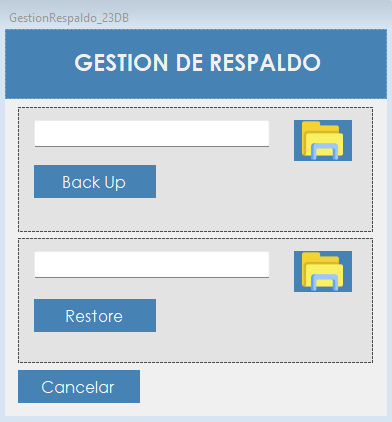

Permite generar copias de seguridad de la base de datos y restaurarla desde una copia anterior.
Toda la información de AeroManager, desde las ventas hasta el mantenimiento de la flota, está en su base de datos. Un respaldo es una copia completa de esa información en un archivo, que permite recuperarla si ocurre un problema.
La pantalla tiene dos operaciones. Back Up genera una copia nueva sin alterar los datos. Restore reemplaza la base completa por el contenido de un respaldo, de modo que todo lo registrado después de esa copia se pierde.
Desde el menú principal, en Administrador › Gestion de Respaldos. La opción aparece si el rol del usuario incluye la patente correspondiente.
También se abre desde el botón Restore BD de la pantalla Reparar inconsistencia. En ese caso solamente se puede restaurar: la parte de Back Up queda deshabilitada.

| Control | Para qué se usa |
|---|---|
| Campo superior | Muestra la carpeta donde se va a guardar el respaldo. |
| Carpeta superior | Abre el cuadro "Seleccione la carpeta donde guardar el backup". |
| Back Up | Genera el respaldo en la carpeta elegida. |
| Campo inferior | Muestra el archivo de respaldo que se va a restaurar. |
| Carpeta inferior | Abre el cuadro "Seleccione el archivo de backup". Muestra los archivos con extensión .bak. |
| Restore | Reemplaza la base de datos por el contenido del archivo elegido. |
| Cancelar | Cierra la pantalla. |
Atención. Restaurar reemplaza toda la base de datos. Las operaciones registradas después de la fecha del respaldo se pierden.
| Situación | Qué significa y qué hacer |
|---|---|
| "Debe seleccionar una ruta para el backup." | Hay que elegir la carpeta antes de presionar Back Up. |
| "Backup generado correctamente:" seguido de la ruta del archivo | El respaldo quedó guardado en la ubicación informada. |
| "Error al generar el backup:" seguido del motivo | El respaldo no se generó. Después de los dos puntos se indica la causa técnica. |
| "Debe seleccionar un archivo de backup." | Hay que elegir el archivo antes de presionar Restore. |
| "¿Está seguro que desea restaurar la base de datos? Se perderán los datos posteriores al backup." | Aparece en el cuadro "Confirmar Restore". Con Sí comienza la restauración; con No no cambia nada. |
| "Base de datos restaurada correctamente." | La base quedó con el contenido del respaldo. |
| "Base de datos restaurada correctamente. Inicie sesión nuevamente." | Aparece al restaurar desde la reparación de inconsistencias. Hay que volver a ingresar. |
| "Error al restaurar la base de datos:" seguido del motivo | La restauración no se completó. Después de los dos puntos se indica la causa técnica. |
| "La operación se registró correctamente, pero no pudo asentarse en la Bitácora:" seguido del motivo | El respaldo o la restauración se completó, pero el evento no quedó en la bitácora. Después de los dos puntos se muestra el motivo técnico. |